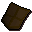

Zombie
| Config name | zombie_armed |
| NPC id | 75 |
| Combat level | 24 |
| Hitpoints | 30 |
| Attack / Strength / Defence | 19 / 21 / 16 |
| Respawn | 70 ticks |
| Options | Attack |
| Aggression | cowardly |
| Wander range | 9 tiles from spawn |
| Max range | 11 tiles from spawn |
| Defined in | scripts/_unpack/225/all.npc |
| Bonuses | Attack bonus 5, Strength bonus 7, Stab def 9, Slash def 8, Crush def 12, Magic def 10, Range def 11 |
Zombie
The walking dead.
Show all 41 spawns on the world map → Open in knowledge graph →
Drops
Drop script: scripts/drop tables/scripts/zombie.rs2 (specific handler)
Drop table
| Item | Quantity | Rarity | Notes |
|---|---|---|---|
| Herb drop table table | see table | 15/64 (23.44%) | |
| 7 | 13/64 (20.31%) | ||
| 18 | 21/128 (16.41%) | ||
| 10 | 5/64 (7.81%) | ||
| 26 | 1/16 (6.25%) | ||
| 35 | 3/64 (4.69%) | ||
| 1 | 3/128 (2.34%) | ||
| 1 | 3/128 (2.34%) | ||
| 3 | 3/128 (2.34%) | ||
| 1 | 1/64 (1.56%) | ||
| 3 | 1/64 (1.56%) | ||
| 1 | 1/64 (1.56%) | ||
| 1 | 1/64 (1.56%) | ||
 Bronze kiteshield | 1 | 1/128 (0.78%) | |
| 4 | 1/128 (0.78%) | ||
| 2 | 1/128 (0.78%) | ||
| 7 | 1/128 (0.78%) | ||
| 1 | 1/128 (0.78%) | ||
| 1 | 1/128 (0.78%) | ||
| Gem drop table table | see table | 1/128 (0.78%) |
Locations
Referenced in scripts
scripts/drop tables/scripts/zombie.rs2scripts/general/scripts/flavour_text/zombies.rs2